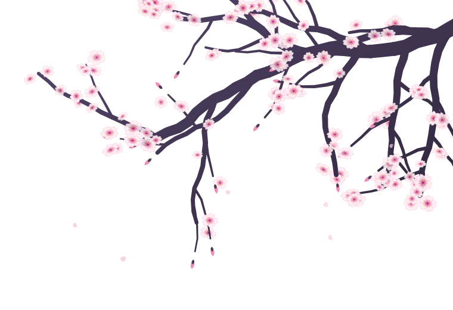

Philippe Viman
Classe : Développeur Web — Alias : Exotic未来
- Rang
- BTSSIO en cours
- Quêtes
- 4+projets réalisés
- Techniques
- 9technologies
- Objectif
- 2027diplôme visé
« Construire, apprendre, évoluer. »

BTS SIO · Disponible pour un stage/alternance
Étudiant en BTS SIO, passionné par le développement web, la cybersécurité et la création de projets modernes. Mon objectif : construire, apprendre, évoluer.
Philippe Viman
Classe : Développeur Web — Alias : Exotic未来
« Construire, apprendre, évoluer. »
01 — ウェブ開発
HTML / CSS / JavaScript
Interfaces modernes, responsive design, animations et composants dynamiques.
02 — システム管理
Linux / Windows / Cisco
03 — 防御
Pare-feu / DNS / Bonnes pratiques
04 — ツール
Ma veille informatique : quatre sujets que je suis de près.
速報 Flash 01
De chatbot à agent : Claude Code, le protocole MCP et les Skills, des compétences chargées à la demande.
Source : Anthropic ↗速報 Flash 02
Les rançongiciels visent hôpitaux, collectivités et PME. La directive NIS2 renforce les obligations.
Source : CERT-FR ↗速報 Flash 03
Les passkeys remplacent le mot de passe par une clé cryptographique : plus rien à voler par phishing.
Source : FIDO Alliance ↗速報 Flash 04
Face au Cloud Act américain, la France pousse les offres qualifiées SecNumCloud pour les données sensibles.
Source : CNIL ↗Stage, alternance, projet ou simple question : je suis disponible pour échanger.